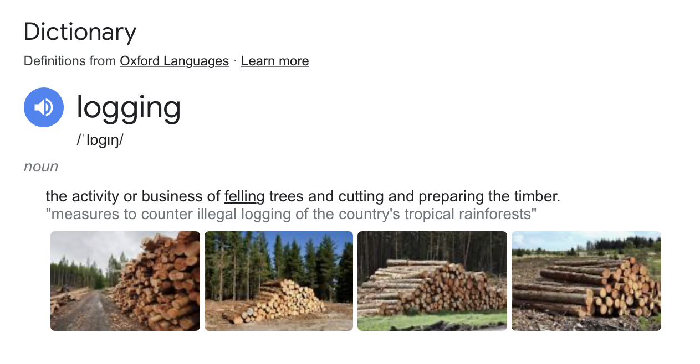
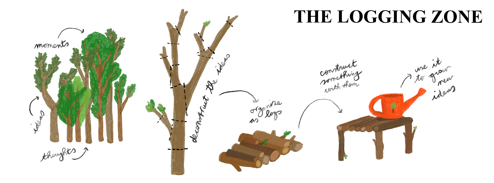

So many little trees growing inside my head – can't see the wood for the trees!
Time to log
some of them...
Welcome to this web-log. I’ve been saying it out loud: I want to log more! Logging as in keeping track, of thoughts and ideas, and moments, maybe. I call it logging because I don’t want to limit myself to blogging/writing only, and see what other documentation-methods might bring me. And also to draw a parallel between logging trees and logging thoughts:
If you know me, you might know I often understand certain abstract parts of life through concrete metaphors. Lately, I have been visualising the inside of my head as a metaphorical forest made up of moments and experiences and thoughts and feelings, where every day certain trees grow and new seeds sprout, and maybe other trees die, (when you forget something or fall out of love with an idea) and the weather changes every day.
Try imagining your own forest, if you like. It probably looks completely different from mine, or very different today than yesterday or a
few years ago. Maybe when you are obsessed with something a certain type of tree takes over your
forest, or maybe if you have a lot of routine in your life, your forest
looks very neat and gridded, maybe you have planted a lot of little trees and you are waiting for them
to grow, or maybe your forest is so dense you can’t even walk there anymore, or so big that you get lost
in it.
Mine feels quite spacious, as in, there is a lot of room for bigger trees to grow. That’s probably because I currently don't have much going on. I have no steady job or big clients, no large projects going on, no real plans for the future. And I somehow feel very calm about that, birds are chirping in my forest and the sun is shining on the open space in the woods. There’s a lot of little idea trees here and there, with leaves all different colors and shapes.
Anyways, what happens when you log a tree from your forest? I don't know yet but this is my hypothesis:
 Here to find out 🪓(I found some tree-logging instructions and used them to make this guide for myself... and for whoever else wants some logging motivation. Still under construction & testing)